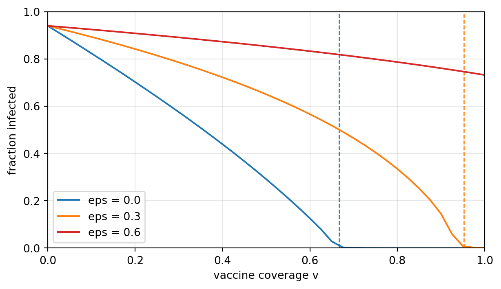

SIR Extensions: Vaccination and Herd Immunity
Module 1: Low-Dimensional Dynamics
NoteReading
The SIR model rests on several assumptions: all individuals start susceptible, vaccinated individuals are fully protected, infection makes people infectious at once, immunity is permanent and the population is closed and well mixed. This page follows a simple rule: break one assumption at a time and change the model as little as possible. Each change gives a new behaviour and often a new mathematical object, such as a higher-dimensional system of ODEs, a PDE or a network.
We use the normalized SIR model of Compartmental Models with \(S + I + R = 1\),
\[ \dot S = -\beta S I, \qquad \dot I = \beta S I - \gamma I, \qquad \dot R = \gamma I, \qquad R_0 = \frac{\beta}{\gamma}. \]
Vaccination with a perfect vaccine
Suppose a fraction \(v\) of the population is vaccinated and fully protected at \(t = 0\). The equations do not change; only the initial condition does,
\[ S(0) = 1 - v - I_0, \qquad I(0) = I_0, \qquad R(0) = v . \]
An outbreak grows if \(\beta S(0) > \gamma\), that is if the effective reproduction number \(R_{\text{eff}}(0) = R_0(1 - v)\) exceeds \(1\). The herd immunity threshold is
\[ v_c = 1 - \frac{1}{R_0}, \tag{1}\]
the same expression as the herd immunity formula in The Reproduction Number. Two points are easy to misread:
- \(v_c\) is a threshold for growth. Above \(v_c\) an introduced case does not start an epidemic in the deterministic model, but a few cases can still occur.
- It assumes homogeneous mixing and a vaccine that gives complete protection.
How large is the threshold for real diseases?
Equation 1 grows quickly with \(R_0\). The table uses typical \(R_0\) ranges, published estimates vary between studies and populations, so treat the ranges as orders of magnitude. The thresholds are computed from Equation 1.
| Disease | Typical \(R_0\) | \(v_c = 1 - 1/R_0\) |
|---|---|---|
| Seasonal influenza | 1.2 to 1.6 | 0.17 to 0.38 |
| COVID-19 (original strain) | 2 to 3 | 0.50 to 0.67 |
| Smallpox | 5 to 7 | 0.80 to 0.86 |
| Polio | 5 to 7 | 0.80 to 0.86 |
| Measles | 12 to 18 | 0.92 to 0.94 |
For measles, a drop of a few percentage points in coverage below about 94% is enough for epidemics to be possible again, which is why measles elimination is fragile.
An imperfect (“leaky”) vaccine
Now relax the assumption that vaccinated people are fully protected. A leaky vaccine reduces susceptibility by a factor \(\varepsilon\) with \(0 \le \varepsilon \le 1\). Split the susceptibles into unvaccinated \(S_u\) and vaccinated-but-still-susceptible \(S_v\):
\[ \dot S_u = -\beta S_u I, \qquad \dot S_v = -\varepsilon \beta S_v I, \qquad \dot I = \beta (S_u + \varepsilon S_v) I - \gamma I, \qquad \dot R = \gamma I . \tag{2}\]
With coverage \(v\), we have \(S_u(0) \approx 1 - v\) and \(S_v(0) \approx v\), so \(R_{\text{eff}}(0) = R_0\,(1 - v + \varepsilon v)\). Setting this below \(1\) gives
\[ v_c^{\text{leaky}} = \frac{1 - 1/R_0}{1 - \varepsilon} . \tag{3}\]
For \(\varepsilon = 0\) we recover Equation 1. For \(\varepsilon > 0\) the threshold is higher, and if \(\varepsilon > 1/R_0\) then \(v_c^{\text{leaky}} > 1\): even vaccinating everyone does not prevent an epidemic. Coverage and efficacy are two separate quantities.
Figure 1 integrates Equation 2 with \(R_0 = 3\) and checks Equation 3. The fraction ever infected falls to zero at the predicted thresholds.
Why smallpox could be eradicated
Smallpox is the standard case where the SIR assumptions hold well. It has no animal reservoir, so transmission is only between humans. Infection and vaccination both give long-lasting immunity, and the disease is easy to recognize. With \(R_0\) about 5 to 7 the threshold is about 80 to 86%. The WHO declared smallpox eradicated in 1980, after the last natural case in 1977.
Other diseases break one or more assumptions, so the SIR model is not enough for them:
| Disease | Why the plain SIR model fails or is fragile |
|---|---|
| Measles | SIR-like, but a very high \(R_0\) means a threshold above 90%. |
| Influenza | Waning immunity, antigenic drift and animal reservoirs. |
| Tuberculosis | Long latent periods, partial immunity and chronic infection. |
In modelling terms, eradication requires the disease-free equilibrium to be reachable and globally stable, not merely locally stable.
Choosing the right model
Extend the SIR model only as far as the question and the data require. More realism is not more truth: every extension adds parameters and uncertainty. Use these models to understand mechanisms and thresholds and to compare intervention scenarios, not to produce a perfect forecast.
NoteExercise 1
For measles with \(R_0 = 15\), compute the herd immunity threshold. A vaccine reduces susceptibility by a factor \(\varepsilon = 0.05\) (95% efficacy). What coverage is needed?
TipSolution
\(v_c = 1 - 1/15 \approx 0.933\). With a leaky vaccine, Equation 3 gives \(v_c^{\text{leaky}} = 0.933/(1 - 0.05) \approx 0.98\). Almost the whole population must be vaccinated, which shows why measles elimination is fragile.
NoteExercise 2
Use Figure 2 as a starting point. Increase the latent period (reduce \(\sigma\)) and describe how the peak time and the height of the peak change. Does the final size change?
TipSolution
A longer latent period delays the peak and lowers it. The final size does not change, because it depends only on \(R_0\) and the initial condition.
NoteOptional project
Consider a hypothetical human-only disease with \(R_0\) between 5 and 7 and fatality ratio about 0.3, with outbreaks starting in five regions at once. Choose a model structure (SEIR, single population or metapopulation), model a vaccination campaign with a start delay and a daily dose capacity, estimate cumulative infections and deaths until you declare control, and identify the two or three assumptions that most affect your estimate.
Next
Simulating the SIR Model implements the SIR and SIS models, and Fitting an Epidemic to Data fits them to data.
References
Hethcote, Herbert W. 2000. “The Mathematics of Infectious Diseases.” SIAM Review 42 (4): 599–653. https://doi.org/10.1137/S0036144500371907.
Keeling, Matt J., and Pejman Rohani. 2008. Modeling Infectious Diseases in Humans and Animals. Princeton University Press.